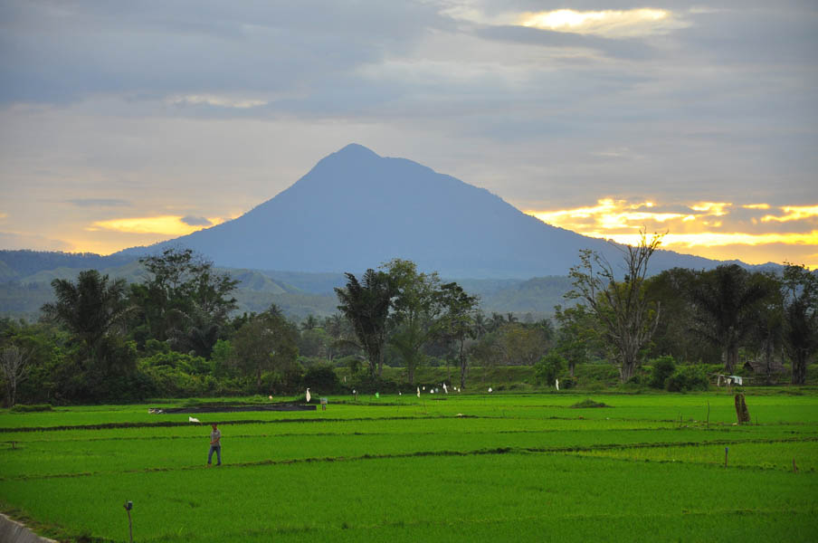

Wisata Gunung Seulawah
Gunung Seulawah Agam merupakan salah satu gunung berapi aktif yang terdapat di Aceh Besar, merupakan spot pendakian favorit bagi pecinta alam. Keindahan wisata alam yang dipancarkan Provinsi Aceh seolah tak pernah pudar oleh waktu. Beribu tempat wisata yang menawarkan panorama alam mempesona maha karya Sang Pencipta menjadi incaran bagi para pelancong lokal hingga mancanegara. Gunung Seulawah Agam merupakan salah satu contoh yang selalu menjadi destinasi para pencinta alam.